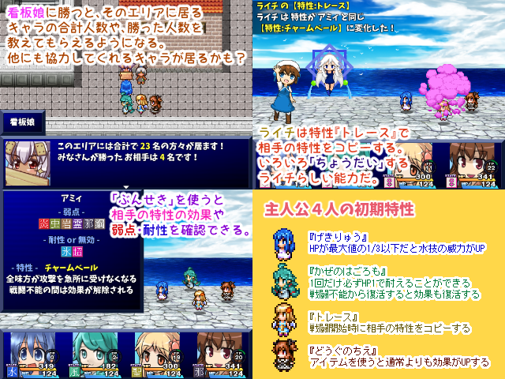

| No.02 好きなキャラ100人以上とばとる -体験版- | |
|
 | |
| 作成ツクール：VXAce | |
| ジャンル：探索RPG | |
| 作者名：雨水葉月 | |
| ＜配信/動画投稿/翻訳＞可/可/可 | |
＜作者のコメント＞「好きなキャラ100人で魔王把握」をスレ投下してから5年半、 RPGになって帰ってきた！ 前作から引き続き登場するキャラに加えて、今作から参戦するキャラもいます。 VIPRPGツクラーを始めてから10年目～10周年としての 集大成としてまだ詰め込みたい要素が結構あるので 今回は体験版として公開します。エリア3まで遊べます。 完全版の公開を目指して引き続きtktkを進めます。 『現在のバージョンにおける登場情報』 登場キャラ数：67 登場変身姿数：6 | |
管理人から いきなりすごい作品が（二回目）！！キャラや演出を見るだけでも楽しめそうだし、ポケモンベースだから戦術もいろいろと取れそう。変身の作りこみもすごく楽しみ いきなりすごい作品が（二回目）！！キャラや演出を見るだけでも楽しめそうだし、ポケモンベースだから戦術もいろいろと取れそう。変身の作りこみもすごく楽しみ |
|
| ダウンロード(284mb:2/2更新) 感想掲示板 | |
| 前の作品 次の作品 / TOPへ戻る | |